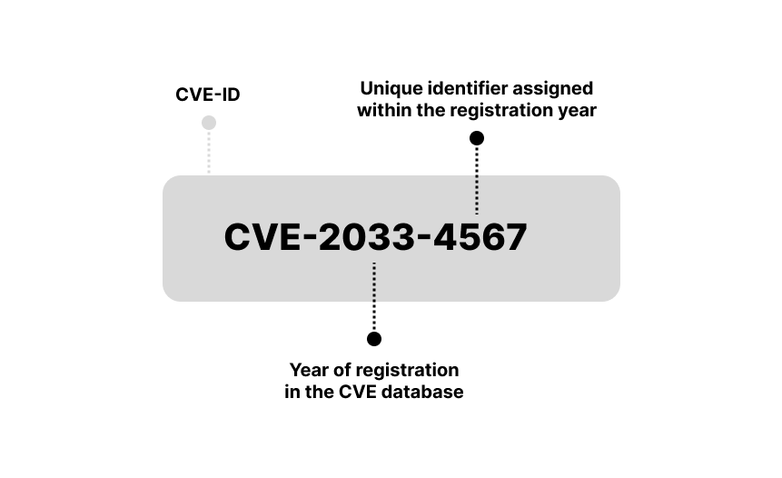
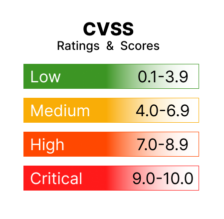

4. Vulnerability Analysis
In this phase, you go hunting for weaknesses. Not just guessing — now you use actual tools to identify flaws in the system that could be exploited by an attacker.
There are many good tools for vulnerability scanning. Before we get into a few of them, let's get familiar with some important terms when it comes to vulnerability analysis.
Vulnerabilities can appear in many forms:
CVEs (Common Vulnerabilities and Exposures) are unique IDs for known security flaws. On this path, you will come across these things often. In real-world testing, spotting a known CVE can feel like finding a name tag on your bug. It means others have seen it, rated it, maybe even written an exploit for it — and now, you're part of that story too. This is how CVE entries look like:
You see, the year is 2033 — so clearly, we're going back to the future. What secrets does this timeline hold? Could this be the very vulnerability YOU have uncovered? That moment when nerds ask, “Do you have a CVE?” — and you casually say, “Yes.”
How critical is your CVE discovery? We don't know it yet, but that's where CVSS scoring comes in. CVSS gives each vulnerability a number from 0 to 10, based on how much trouble it could cause. The higher the score, the scarier the bug. Think of it as the danger meter for your findings.
Okay, let's say your CVE discovery scores a lucky number 7.7. What does that mean? It means you've just hit a high-risk vulnerability. Congratulations! And thoughts and prayers for the system where you found the vulnerability.
So you're finding vulnerabilities, assigning them CVE numbers, and scoring their danger level with CVSS. But how do you know what types of issues are most common — and most dangerous — in real-world web apps? That's where OWASP Top 10 comes in.
OWASP (Open Web Application Security Project) is a non-profit project that keeps track of the nastiest web application vulnerabilities. Their Top 10 list is basically a cheat sheet of the bugs attackers love and defenders fear.
I recommend you to take a closer look: OWASP Top 10
Not all vulnerabilities found are exploitable. And most importantly, not all exploitable vulnerabilities are found by scanners. We are talking about these results:
🥁 False Positive: Scanner reports a vulnerability that isn't really there. Wastes time, but doesn't put the system at risk.
🙈❗ False Negative: Scanner fails to detect a real vulnerability. Serious risk — attacker may find it before you do.
Scanning is great — but not enough. Penetration testing is essential.
Now it's time to get hands-on. Run the following scans on your target server and take notes on what you find. I'll guide with the results and we will put some of the theory we just covered into practice.
WPScan is a specialized scanner for WordPress. It checks for known vulnerabilities, outdated plugins, and weak passwords. It's definitely a tool worth trying when targeting WordPress. Here, try this command in your Kali Linux terminal:
wpscan --url http://192.168.30.6 --enumerate vp
Okay, let's see what we have. Your results may not be identical, but these are the kinds of findings you can expect:
Getting an API key for WPScan is simple and something you might want to try later. But we'll skip it now to save time. What matters here is this: there's a dedicated scanner just for WordPress. I recommend you to explore its possibilities. And I'm also going to introduce one more specific scan, which will be very exciting for us in the next step.
To find possible WordPress usernames, use the command:
wpscan --url http://192.168.30.6 --enumerate u
As you scroll through the results, you should come across a less surprising discovery: the username Vivian. Take a note of this — it might help you during login attempts.
🔍 Tip: You can manually check if a service or version is known to be vulnerable.
For example, we've found:
Apache 2.4.58
Want to know more?
This kind of manual lookup is especially useful when:
We've already looked at some basic scans, but now it's time to dig into vulnerabilities. This time, we'll use Nmap's powerful scripting engine to check if the target has any known weak spots.
sudo nmap -sV --script vuln 192.168.30.6
This command doesn't just list open ports — it also checks if those services are known to be vulnerable. It's like asking: “Hey, has this software ever had a security issue?” 🕵️
At first glance, this scan might look like a wall of text. The good news is: we only need to pick out a few important signals from the noise. Many of the elements you've seen in earlier scans appear here as well. Here's a summary of the interesting things that probably popped up:
✅ In Summary
This scan didn't open any doors for us — yet. But it showed us:
We've seen cracks in the wall, and that's exactly what we need for the next step. Let's keep going. 🔍
Now that we've scanned for open ports and known vulnerabilities, let's try something new: Nikto is a web server scanner — it checks websites for common issues and misconfigurations.
nikto -h http://192.168.30.6
Let's take a look at what it found.
Nikto didn't find anything catastrophic, but it showed us several common misconfigurations worth cleaning up:
All in all, it's a helpful second opinion — and every piece adds to our full picture of the target.
While there are many scanners out there, Nessus stands out for its easy-to-use interface and clear results.
Important: Nessus is not pre-installed on Kali Linux, so you'll need to install and set it up first. Based on experience, this process can take a bit of time.
Here's a good Nessus installation guide for Kali Linux:
Nessus Installation in Kali Linux by Mohammed Waseem
If you decide to try this scanner yourself, be patient. Once the scanner is available, it's really easy to use. Just:
Nessus will list vulnerabilities by severity (Low, Medium, High, Critical), and each finding links to a CVE with more info. It also suggests how to fix them — great for learning!
Nessus uses the CVSS scoring system automatically to rate the severity of each vulnerability it finds. You'll see scores from 0 to 10, color-coded by risk level. This makes it easier to prioritize the most dangerous vulnerabilities.
This is what the Basic Scan results currently look like:
Looks nice, right? Enjoy the peaceful colors while you can — scan something like Metasploitable in the future and watch this pie chart turn into a full-blown cyber crime scene.
Over time, our target machine itself might become more vulnerable, because software ages. That's actually part of the lesson: systems need updates to stay secure.
Don't be fooled by short lists. One entry might hide several vulnerabilities under the hood — like in our Apache case here:
Nessus reports things clearly and even offers suggested fixes — pretty great, right? But don't let the clean layout fool you. Like all automated scanners, Nessus isn't perfect. False positives and false negatives are a real thing. While writing my thesis, I came across a study showing that Nessus missed up to 69% of tested vulnerabilities. Always review the results carefully and verify important findings manually.
Conclusion: We now have a solid understanding of what's potentially vulnerable. In the next phase, we'll try to turn these discoveries into real access!
Ok, let's move on. Next stop: